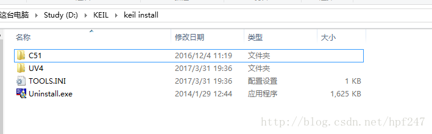
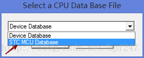
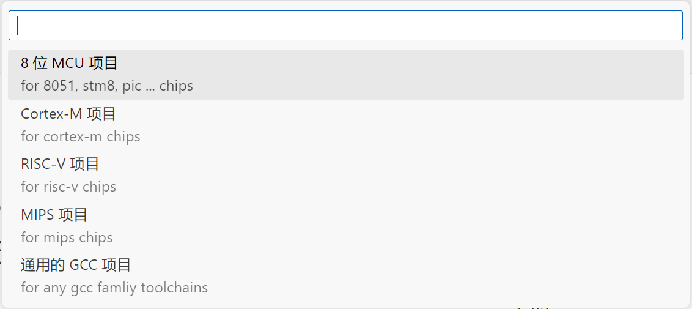
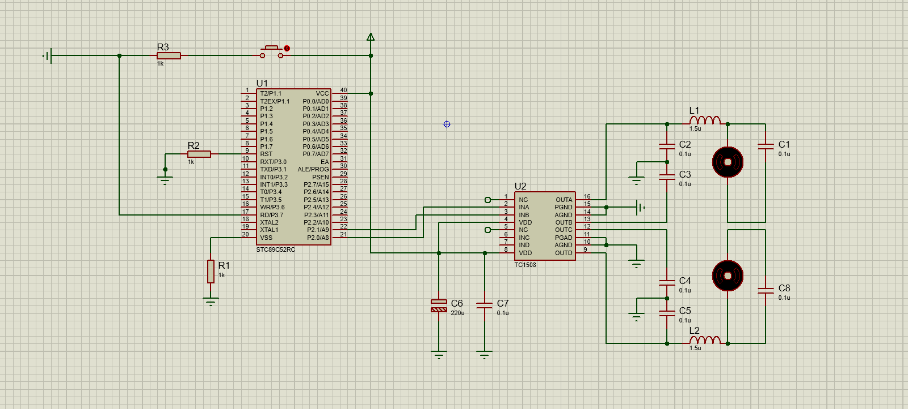
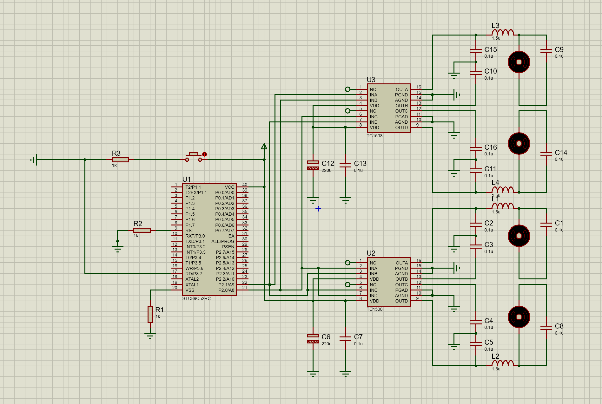

多电机控制
工程训练IIB 风力摆A组-多电机控制
天津理工大学
作者：TheWindSing
版本：1.1
时间：2024-1-6
器件说明
主控单片机
型号：
STC89C52RC
参考:
51最小系统图：

接口图:

电机驱动芯片
型号：
TC1508A
实物图：

其他
- 杜邦线若干
- 几个不确定阻值的电阻
- 1个按钮开关
功能实现
单电机单向控制
在Keil中新建STC工程：
一般直接安转完Keil软件中是没有STC的数据库，所以需要我们手动添加。
打开STC-ISP软件,然后点击Keil仿真设置，点击添加型号和头文件到Keil中 添加STC仿真器驱动到Keil中。
如下图：

之后弹出这个方框，选择好路径。

选择你Keil软件安装的路径！

打开Keil软件，选择新建工程，它就会弹出下面这个界面，这时候就可以选择STC MCU Database进行选择STC系列的单片机了。 
选择STC89C52单片机：

代码：
xsbit LED = P2^0;void DelayMS(uint x){ uchar i; while(x--) { for(i=120;i>0;i--); }}void main(){ while(1) { LED = ~LED; DelayMS(150); }}单电机多向控制
实际上可以在Keil这个EDA软件里面直接修改然后写出多电机控制的程序
但是，这里建议采用VScode、Sublime Text、Notepad++等编辑器做进一开发，有利于代码编写和文件管理。
VScode教程：
下载Embedded IDE插件，还可以添加Copilot和C语言编程等插件

设置工具链：

依次新建好项目：



打开项目则需要切换到项目工作区：

控制一个电机正反方向旋转代码：
xxxxxxxxxxuchar time,count=100,flag=1;//低电平的占空sbit PWM1=P2^0; //PWM 通道 1，反转脉冲sbit PWM2=P2^1; //PWM 通道 2，正转脉冲sbit key_turn=P3^7; //电机换向void delayxms(uint z);void Motor_turn(void);void timer0_init(void);void main(void){ timer0_init(); while(1) { Motor_turn(); }}void delayxms(uint z)//延时xms程序{ uint x,y; for(y=z;x>0;x--) for(y=110;y>0;y--);}void Motor_turn(void) //电机换向控制{ if(key_turn==0) { delayxms(2);//此处可有可无，但是时间不能太长，否者会的中断产生冲突 if(key_turn==0)flag=~flag; while(!key_turn); }}void timer0_init(void) //定时器0初始化{ TMOD=0x01; //定时器0工作于方式1 TH0=(65536-10)/256; TL0=(65536-10)%256; TR0=1; ET0=1; EA=1;}void timer0_int(void) interrupt 1 //定时器0中断函数{ TR0=0;//设置定时器初值期间，关闭定时器 TH0=(65536-10)/256; TL0=(65536-10)%256; TR0=1; if(flag==1)//电机正转 { PWM1=0; time++; if(time<count)PWM2=1; else PWM2=0; if(time>=100)time=0; } else //电机反转 { PWM2=0; time++; if(time<count) PWM1=1; else PWM1=0; if(time>=100)time=0; }}电路布局：

这里由于器件限制省略了复位部分，器件充足的情况下最好加上。
多电机多向控制
Porteus画电路图：
由于Porteus没有STC89C52和TC1508等器件，可以用如AT89C52等其他类似器件代替，或者自己制作示意元件封装。
这里只需画出示意电路，故简单选择后者。
添加部分代码：
xxxxxxxxxx// ...sbit PWM1=P2^0; //PWM 通道 1，反转脉冲sbit PWM2=P2^1; //PWM 通道 2，正转脉冲sbit PWM3=P2^2; //PWM 通道 3，反转脉冲sbit PWM4=P2^3; //PWM 通道 4，正转脉冲// ...void timer0_int(void) interrupt 1 //定时器0中断函数{ TR0=0;//设置定时器初值期间，关闭定时器 TH0=(65536-10)/256; TL0=(65536-10)%256; TR0=1; if(flag==1)//电机正转 { PWM1=0; PWM3=0; time++; if(time<count)PWM2=1; else PWM2=0; if(time>=100)time=0; } else //电机反转 { PWM2=0; PWM4=0; time++; if(time<count) PWM1=1; else PWM1=0; if(time>=100)time=0; }}// ...电路图：

因为只有一个按钮，所以想控制多种运动方式只能直接自己上手拔线了。。。TUT
就此，通过手动拔线控制已经可以实现前后左右以及斜向45°八个方向的摆动了。